1. Engine Wiring Harness Assembly Removal
Engine Wiring Harness Assembly Removal
Left Side Harness Connections
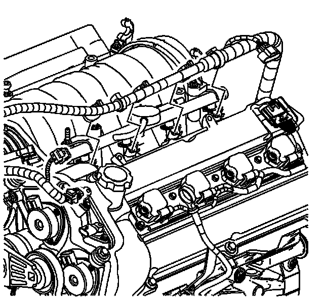
1. Disconnect the engine wiring harness from the left side fuel injectors.
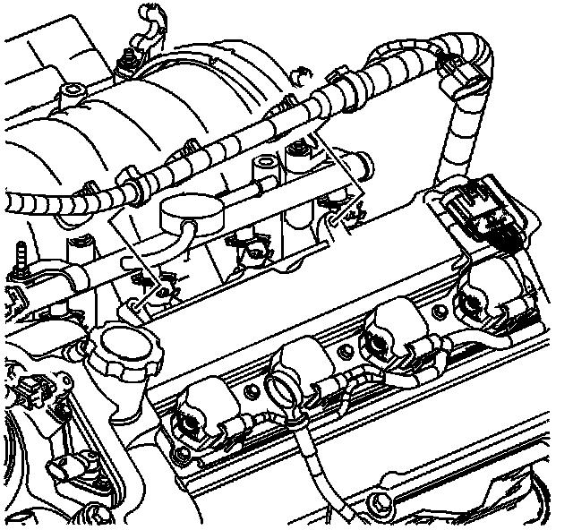
2. Disconnect the engine wiring harness from the left camshaft cover.
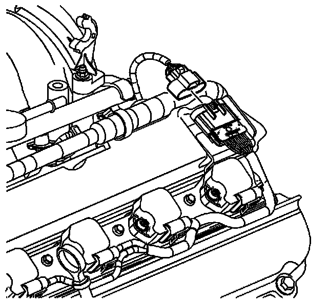
3. Disconnect the engine wiring harness from the left coil assembly harness.
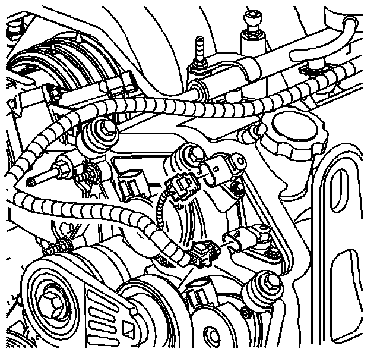
4. Disconnect the engine wiring harness from the left camshaft position sensors.
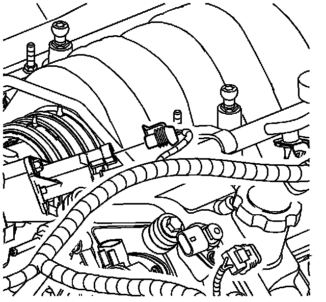
5. Disconnect the engine wiring harness from the EVAP purge solenoid.
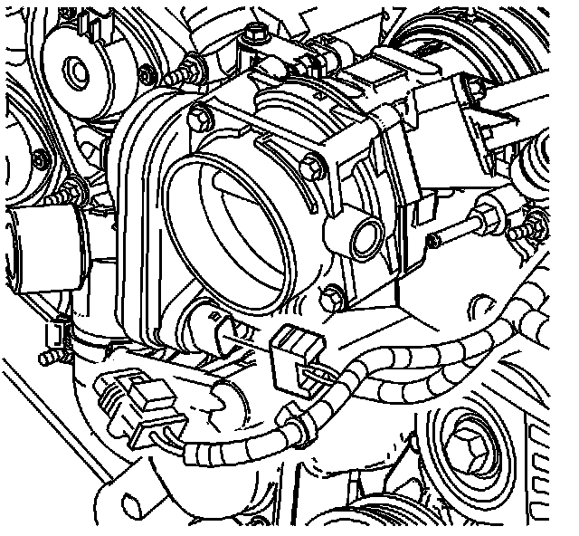
6. Disconnect the engine wiring harness from the throttle position sensor on the throttle body.
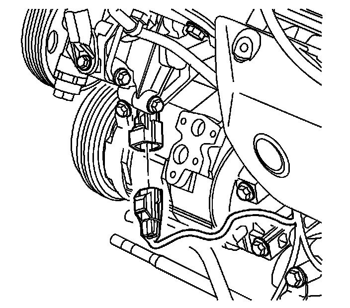
7. Disconnect the engine wiring harness from the air conditioner compressor.
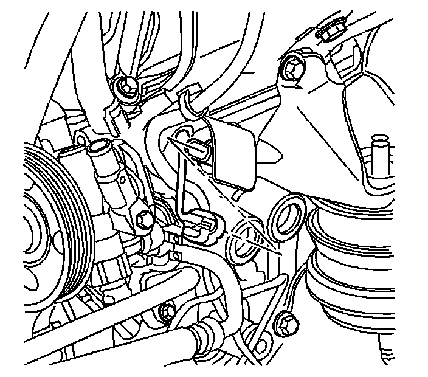
8. Disconnect the engine wiring harness from the oil pressure sensor.
Right Side Harness Connections
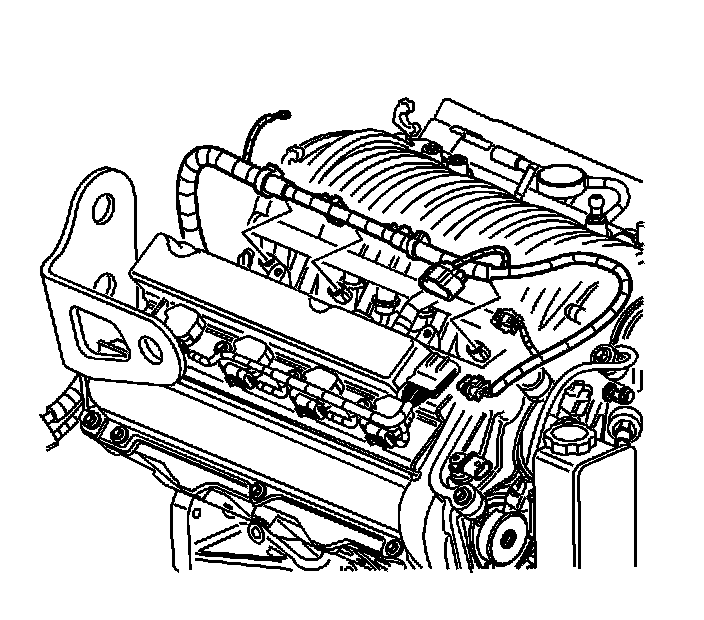
1. Disconnect the engine wiring harness from the right side fuel injectors.
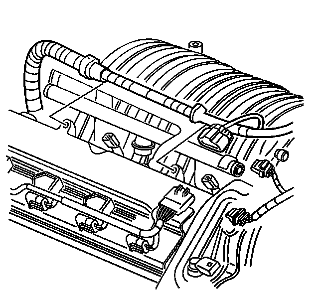
2. Disconnect the engine wiring harness from the right camshaft cover.
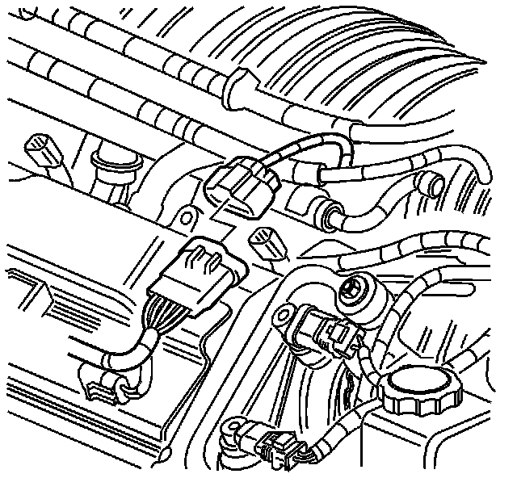
3. Disconnect the engine wiring harness from right coil assembly harness.
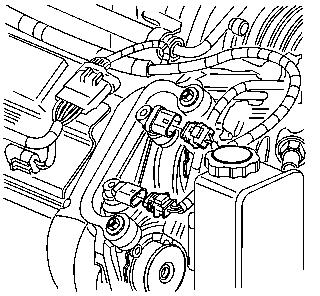
4. Disconnect the engine wiring harness from right camshaft position sensors.
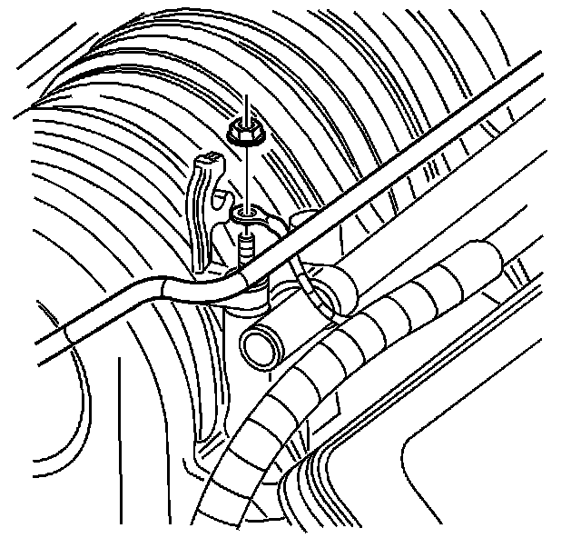
5. Disconnect the engine wiring harness ground from the intake manifold stud.
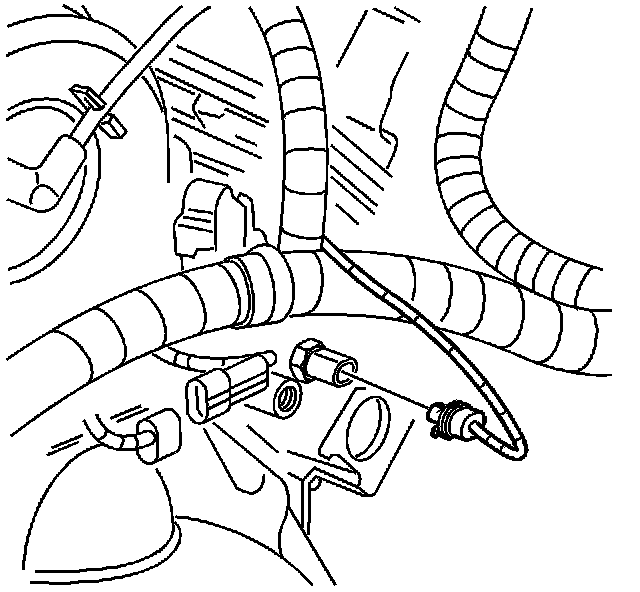
6. Disconnect the engine wiring harness from the ECT sensor at the rear of the right cylinder head.
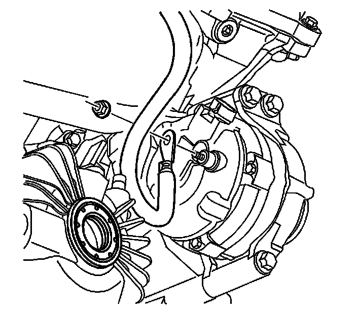
7. Disconnect the starter motor wiring harness from the generator.
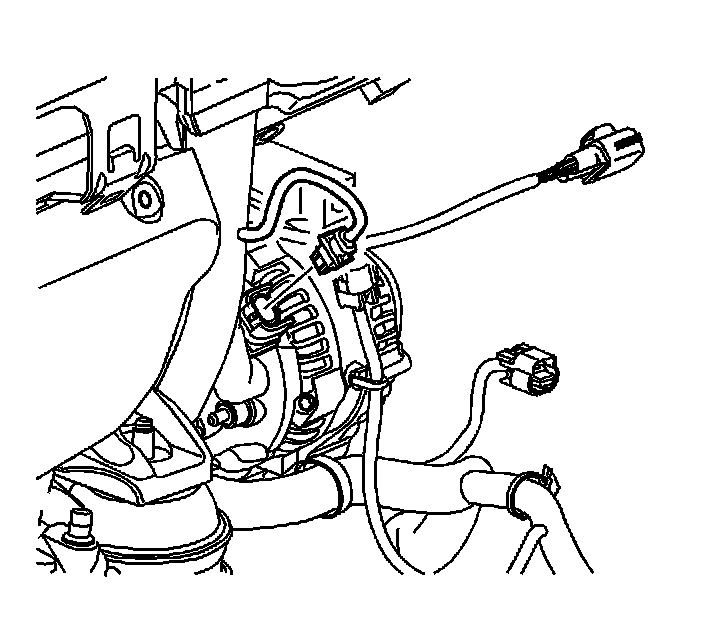
8. Disconnect the engine wiring harness from the generator.
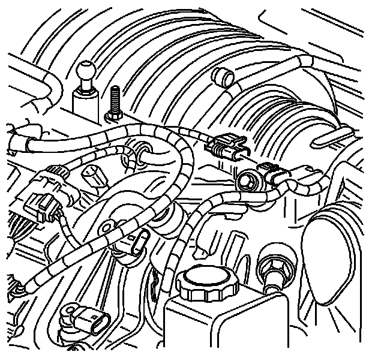
9. Disconnect the engine wiring harness from the MAP sensor.

10. Disconnect the engine wiring harness from the knock and crankshaft position sensor wiring harness.
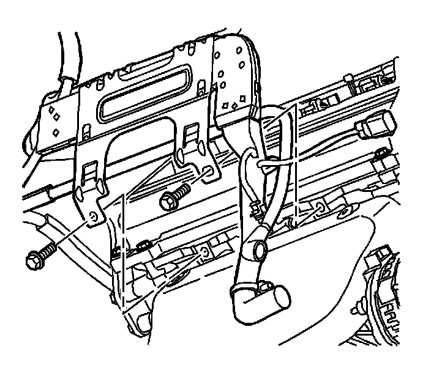
11. Remove the engine wiring harness bracket from the engine block.